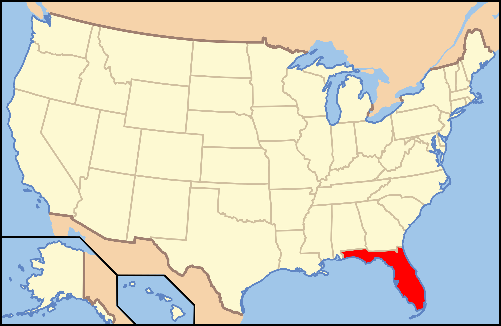

Florida

1. Lovers Key State Park - Fort Myers Beach

jav906/Tripadvisor
| Grade: Short |
|---|
| More Images |
| Trail Link |
2. Pine Island - Blue Springs State Park

Roxanne A/Tripadvisor
| Grade: Moderate |
|---|
| More Images |
| Trail Link |
3. Rainbow Springs - Rainbow Spings State Park

Margie Kinder/Alltrails
| Grade: Moderate |
|---|
| More Images |
| Trail Link |